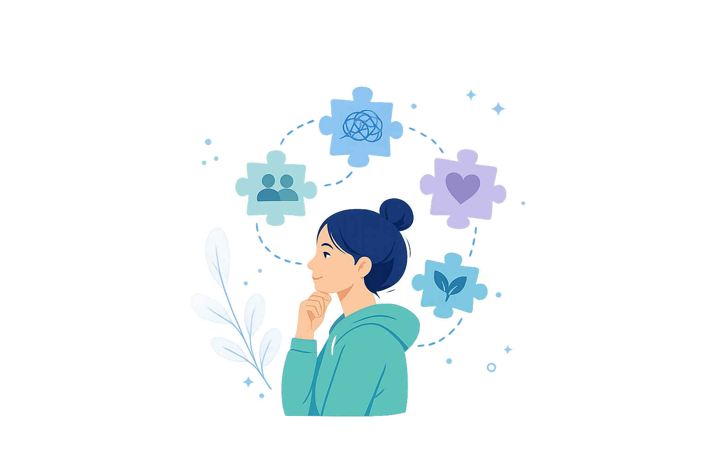

Comprende
Comprender lo que sentimos también es una forma de cuidarnos.
Aquí encontrarás una guía visual y sencilla para identificar qué puedes estar experimentando, reconocer señales importantes, saber qué puedes hacer y entender cuándo conviene buscar apoyo.

Condiciones y experiencias
Explora para entender qué puede estar pasando y cómo se manifiesta.
No encontramos un tema con ese nombre. Prueba con otra palabra.
Situaciones
Experiencias del día a día que también pueden afectar tu bienestar.
Herramientas
Ideas simples para comprenderte, regularte y saber a quién acudir.